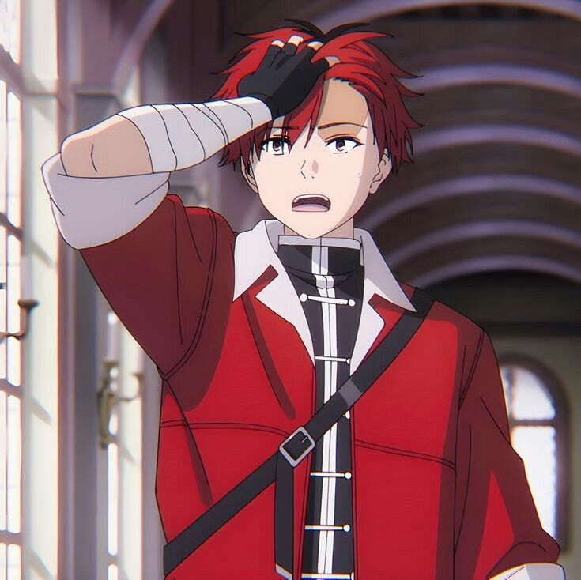

Stats:
Tier: Low 7-C
Name: Stark
Gender: Male
Age: 18-21
Classification: Warrior, Human
Tier: Low 7-C
Name: Stark
Gender: Male
Age: 18-21
Classification: Warrior, Human
Short Description:
Stark is a fearful but skilled warrior. He is a human apprentice of the dwarven warrior Eisen, who joins the elven mage Frieren and her human apprentice Fern on their journey. Despite his deep-seated fear of monsters and tendency to panic, he demonstrates remarkable courage and combat prowess when it counts, sometimes leading to powerful attacks like his signature "Lightning Strike".
Stark is a fearful but skilled warrior. He is a human apprentice of the dwarven warrior Eisen, who joins the elven mage Frieren and her human apprentice Fern on their journey. Despite his deep-seated fear of monsters and tendency to panic, he demonstrates remarkable courage and combat prowess when it counts, sometimes leading to powerful attacks like his signature "Lightning Strike".